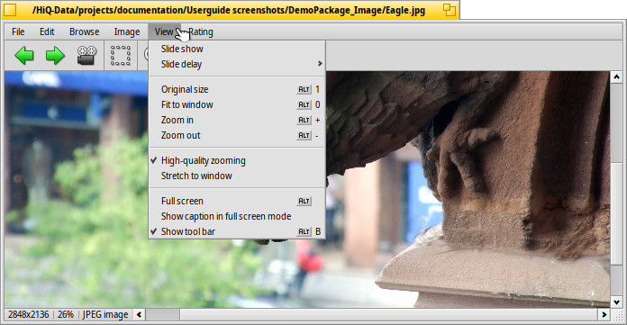
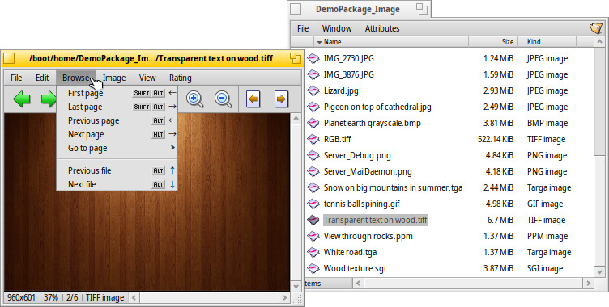

画像ビューワ (ShowImage)
画像ビューワ (ShowImage)
| Deskbar: | 無し (サポートされたファイルをダブルクリックで起動) | |
| 場所: | /boot/system/apps/ShowImage | |
| 設定ファイル: | ~/config/settings/ShowImage_settings |
画像ビューワ (ShowImage) を使うと、データトランスレーターでサポートされているフォーマットの画像を見られます。新しいフォーマットはトランスレーターがシステムに追加されると認識されます。これは Haiku のベクターアイコンファイル、WonderBrush イメージや WebP イメージが使用可能になった時に行われています。
画像ビューワは最低限の編集機能、つまり画像のトリム、回転、フリップ、および画像をほかのフォーマットで保存する機能を提供します。
 表示
表示

メニューは フォルダー内 (またはクエリのウィンドウ内) 画像の を開始し、 を 2 秒から 20 秒の間で設定できます。
現在表示された画像に (ウィンドウサイズを変更せずに) 適用されるほかのコマンド：
は画像を 原寸大 (100%) で表示します。
画像を拡大した後や、ウィンドウサイズを変更した後に とイメージをウィンドウフレームの中に縮めます。
と は 10% ステップで画像の拡大縮小率を変更します。拡大縮小はマウスホイールでもできます。ウィンドウより広く拡大した画像をパンするには左クリックしてマウスをドラッグします。
次の 2 つの設定は現在表示された画像だけではなく別の画像にブラウズしても記憶されます。
は拡大縮小時に高速でフィルターをかけ、ぎざぎざを取り除きスムーズな画像を生成します。
は小さな画像をウィンドウフレーム全体に表示します。
それから、 してファイル名を画像の下に表示できる、 モードがあります。
最後に、 でグラフィックコントロールの表示 / 非表示ができます。

左から右へ: 前のイメージ、次のイメージ、スライドショーを (全画面表示で) 開始、選択モード、原寸に戻す、ウィンドウにあわせる、拡大、縮小、前後のページ (TIFF のような一つのファイルに複数のページを許可するイメージフォーマットの場合、以下を参照ください)。
頻繁に使われているコマンドの多くは、右クリックのコンテキストメニューから利用可能です。全画面表示のときに便利です。
ブラウジング

画像を開くと、↑/↓ か ←/→ を押してそのフォルダー (またはクエリ結果ウィンドウ) 中のほかの画像をすばやく閲覧できます。それにあわせて Tracker ウィンドウでも選択箇所の変更を見られます。
現在の画像のフォルダーを開いてその親フォルダーとサブフォルダーへすばやくナビゲートする方法があります。Tracker のドリルダウンナビゲートと同じように、ステータスバーの情報エリアをクリックすれば現在の画像のサイズとフォーマットを表示します。
メニューを見ると、別の閲覧タイプが表示されます。たとえば、TIFF などのイメージフォーマットは 1 つのファイルに複数のページが入っています。 や、 などのコマンドでページを移動できます。
編集

メニューは画像を見るのに必要ないくつかの操作を提供します。それは、画像の回転と反転です。しかし実際の画像データは変更されないことに注意してください。次に開いたときに回転した状態で表示するために属性を追加するだけです。
現在の画像をワークスペース用の背景として保存するには、 から背景設定を開きます。
トリミングはもう 1 つの時々必要になる機能です。トリミングするフレームを定義するには、 メニューから に切り替え、左マウスボタンでボックスを引っ張り出せます。モードを変更しない場合は ”ノーマルモード” 中で左クリックドラッグしながら CTRL を押すことでボックスを作成できます。
か ESC で選択ボックスを取り除けます。
次の章ではトリミングした部分を実際に保存する方法を説明します。
保存と変換
画像を保存するか別のフォーマットに変換するには、 メニューから、いつもの を選び、フォーマットとファイル名を選択します。
Tracker ウィンドウが保存先のフォルダーを開いている時は、ドラッグ＆ドロップですばやく保存できます。
上記のトリミングを完成させるには、フレームを選択するか、 でイメージを選択してください。それから選択部分をデスクトップか Tracker ウィンドウへドラッグ＆ドロップして新しいイメージをオリジナルと同じフォーマットで作成します。
ファイルを別のフォーマットで保存するには、右マウスボタンでドラッグ＆ドロップするときに現れるコンテキストメニューからフォーマットを選択してください。
キーボードショートカット
とても便利なショートカットのリストです。
| ← / ↑ | 前の画像 | |
| → / ↓ | 次の画像 | |
| DEL | 画像をごみ箱に移動 | |
| + | 拡大 | |
| - | 縮小 | |
| 0 | 原寸に戻す (100% ズーム) | |
| 1 | ウィンドウに合わせる | |
| ALT ENTER | 全画面表示の切り替え (ダブルクリックで切り替えも可能です) | |
| CTRL | CTRL を押しながら選択モードに切り替えずに選択フレームを作成できます。 |